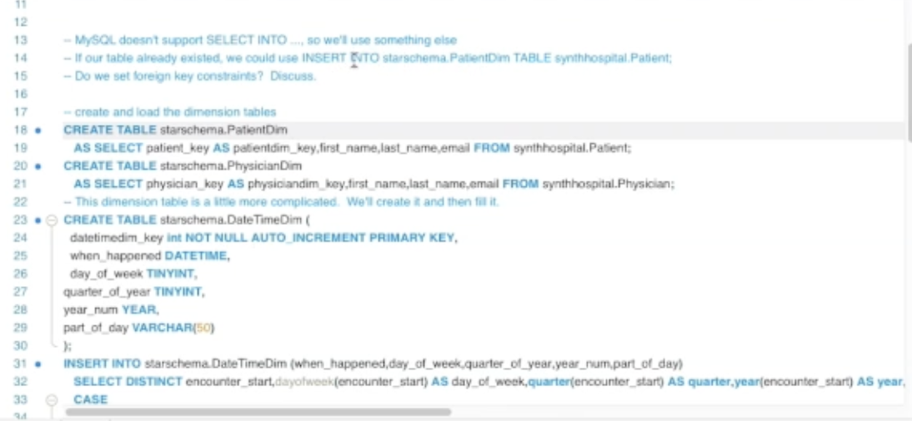

Data warehouses must be organized into a star
schema.
- Minimize the number of joins – may cause redundancy but that’s
fine!
- “star” because it’s generally one primary table (eg. sales) with
several other tables pointing to it.
- “snowflake” when tables don’t directly connect to central table.
Don’t go overboard!
- make queries much simpler - can just drill with WHERE clause
Why not use the same design as a transactional
database?
- trad databases have lots of complexity – eg. many tables with
complex joins. Excellent to reduce redundancy and ensure fast changes
and updates, but querying is complicated and unintuitive (and
inefficient when considering joins)
Example
Example
link
Consider established table of Patient, Physician, and Encounter
knitr::include_graphics('files/starschema.png')

- use of
CREATE TABLE AS
- patient and physican table remain the same
- adds detail and derived information about date
- choosing
DISTINCT datetimes
- Fact table pulls it all together
patient_key, physician_key,
datetimedim_key only attributes, all as primary key
- Joining all of these tables creates entire information
Notes on Fact Tables
Use the smallest possible “grain” possible.
Types of grain:
- transaction grain - measurement taken at single instant, eg. grocery
store scan. measurements only valid for single instant. no guarantee
that all foreign keys represented.
- periodic snapshot grain - corresponds to predefined span of time.
guarantees all reporting entities appear in each snapshot. predictably
dense
- accumulating snapshot grain - corresponds to predictable process
with beginning and end. eg. claims processing, college admissions.
records revised and overwritten with time, much smaller than other
types.
Defining decisions:
- What fact data to summarize!
- what attributes to aggregate - identify attributes that are
aggregated by queries
- related facts to aggregate into the same summary table. examine
example queries and identify aggregated facts